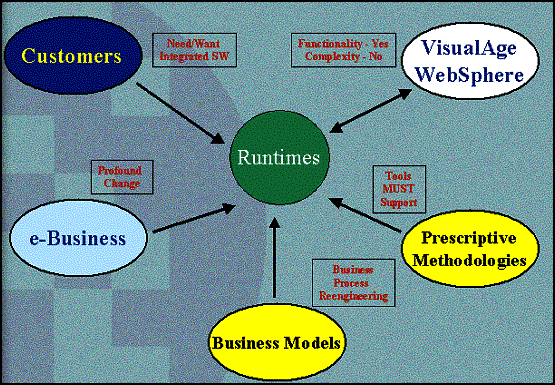
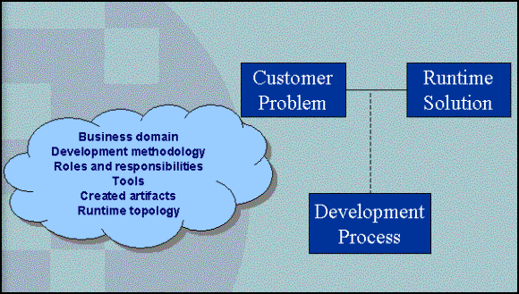
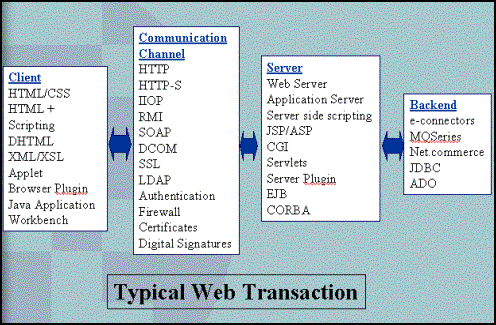
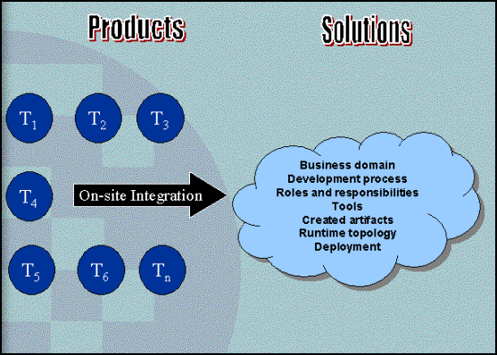
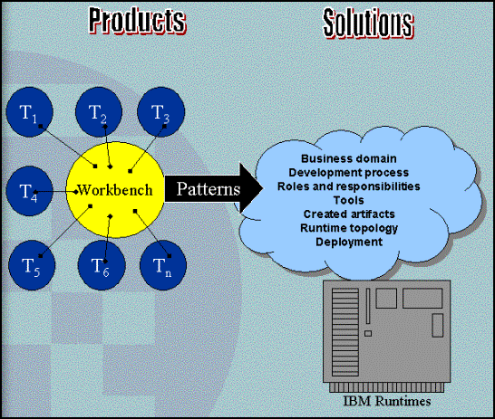

| Eclipse Corner Article |
SummaryBy: Tony Cianchetta
The Eclipse Platform provides the "integration-ware" to enable the next generation of integrated application development tools. This article is an overview that takes you through the why, how and what of the design, development, and deployment of extensible tool components developed using this technology.
The last five years have shown us extraordinary change in the field of application development. There are many implications of this change but the net result has been intense pressure on everything associated with creating runtime solutions in Web time. Figure 1 provides a view of some of those pressures and, as most things in the business world, it begins and ends with the Customer.
Customers have high expectations set by the functionality provided by modern development tools. They know what integrated tools look like from their use of such integrated suites as Lotus Smart Suites and Microsoft Office. Customers expect to see the same level of integration in their software development tools.

Figure 1. Pressures on contemporary software development tools.
The evolution of e-business from concept to reality has dramatically changed the face of business integration. Surviving on the World Wide Web means application interoperability, and application interoperability means an integrated set of development tools that understand and can maintain the complex relationships between the integrated components that make up a complete application.
Business Models are changing rapidly due to intense and comprehensive business process reengineering resulting from a desire to leverage the Web. These new business models are often complex and extremely difficult to maintain. In addition, application development must be able to keep pace with changing business needs by supporting integrated tools that allow rapid and iterative development.
Prescriptive methodologies are often necessary to manage the complexity of application development, and to make development a pragmatic, controllable, and repeatable process. To be effective, the methodology must be appropriate to the customer's domain and development style. Users should be able to select a methodology that can be tightly integrated with the development tools use to create the artifacts of their applications as specified by the methodology.
Current application development tool suites and IDEs have received mixed reviews from Customers. Tools like IBM VisualAge, Microsoft VisualStudio, SUN Forte for Java, etc., provide rich functionality to support customer application development. But these tool suites have gaps and overlaps in functionality, and can be complex to adopt. Customers' need application development tools that are truly integrated with one another in order to hide this complexity.

Figure 2. What is important to software development customers?
The software development landscape is simple: software companies are in business to generate revenue by solving some business problem with one or more runtime application. They need to focus their limited resources on their core competencies. They have some level of domain expertise and have chosen some runtime topology, usually dictated by their customers. If they have been around for any significant duration, they probably also have some set of legacy artifacts that they need to reuse.
As a result, customers are primarily interested in two ends of the software development process: their core business domain and the applications that automate their business processes, and the runtime environment that executes these applications to help run their business. In between are a number of items that are necessary to transform the customer's concept of their business into applications running on some runtime platform. Typically application developers use some development process to manage this transformation. Regardless of what the development process might be, it will typically consist of roles and responsibilities people play to achieve the desired result. Developers playing these roles will use tools to help them fulfill their responsibilities, and create the artifacts of the application that will be hosted on the runtime platform.
These "customer problem spaces" tend to appear in recurring patterns representing a state of the practice for software development, and effective runtime architectures. Focusing on these recurring patterns introduces an opportunity to better understand the full life-cycle needs of application developers, and to determine what tools they need to create and maintain their applications. The relationships between the artifacts of these applications and runtime architectures also provide an indication of how the tools should be integrated.
By leveraging these patterns, it is possible to create full life-cycle, end-to-end, integrated tools that allow application developers to focus on their business domain instead of investing in the collection and manual integration of tools supporting their development process.
For example, consider Figure 3, which provides an overview of the typical technologies involved in a Web based transaction.

Figure 3. Web development technology choices.
A typical web-based transaction generally originates from a client, travels through some communication channel to a server, where it is processed and perhaps queued to some backend system for data access or integration with existing applications. The result then travels back through the same path to the originating client.
For most early adopters of web technology the entry point was based on a Business-to-Customer (B2C) focus. Initially, getting a home page developed to tell customers who you were and what you offered was perceived as the goal. Accomplishing this required a certain set of tools and skills and centered on HTML-based information presentation.
A B2C transaction can be defined as a horizontal slice through the various technology choices shown in Figure 3 to satisfy such a request. These horizontal slices represent a typical pattern for Web applications using static HTML pages. As customer focus shifts from simple, static web page development and they begin to think in terms of surfacing business processes on the web, they migrate to a different, more complex usage scenario. They begin to appear in the Business-to-Business (B2B) space. As their application requirements evolve, the tooling required to support these new requirements must also evolve.
This might mean a move from HTML-based information presentation to web applications using XML-based information interchange and Web services. B2B applications range in complexity from simple services to complex inter-enterprise business process integration. As natural as the progression from B2C to B2B may seem, the jump in technology and complexity is significant. Sometimes just that one new function point may push the application over the line to a new run time architecture requiring a whole new set of development tools. New tools need to be purchased or developed, and people retrained to use them. These new tools must be seamlessly integrated with existing tools so that customers leverage existing knowledge and development processes while exploiting the capabilities of more complex runtime topologies.
To make things easier for customers to evolve as an e-Business, tool vendors must change the way they deploy their tools in the marketplace. Tool vendors have traditionally taken a product focus to providing individual tools. The result was that choices in tools revolved around programming language and operating system stacks.

Figure 4. Individual shrink-wrapped tools require on-site integration by the
customer.
This pretty much left integrating the various tools up to the customer using their own development resources or paying for external consultants to do the work for them. What is required is a tool strategy that is more solution-based, driven by customer usage scenarios. The patterns of customer problem spaces described above can be used to help define these usage scenarios, the runtime architectures that support them, and the tools required to build the applications on the runtimes. Taking a solution-based approach can address gaps and overlaps in tools supporting particular patterns, provide a common view of the application as a whole, and reduce cost in development.
The Eclipse projects provide the necessary "integration-ware" enabling effective tool development and integration. This integration-ware consists of common services that are useful across all tools, and a common set of frameworks for building plug-in extensions. Using Eclipse it is no longer necessary to build the whole tool environment as a single, inflexible, highly coupled IDE where the tool components are often compromises compared to best-of-breed individual tools. Tool integration is based on open APIs and components that provide:
A common destination to install and integrate tools
A central view across all resources and roles providing a base for consistent,
effective, efficient, scalable, and end-to-end application development
An open, flexible, extensible, standards-based and portable framework for tool
integration and interoperability
A view of the complete application across all components and the entire team
Standard look-and-feel across all plug-in tools
Portable, high-performance, platform native look-and-feel

Figure 5. A common workbench with plug-in components.
By providing a common set of services and frameworks, we hope to eliminate the need for on-site integration of widely diverse tools. This, in turn, will aid our software development customers in focusing their resources on what they do best: providing solutions to their customers. By leveraging existing standards and providing well-defined extension points (APIs), we intend to provide as much flexibility and extensibility as possible.
The Eclipse platform has been developed to provide the base for accessing common services and frameworks. Specialized tool functionality can be provided by separate plug-in components. Tool developers are currently creating plug-in components for new tools, and wrapping their existing tools so they can integrate with Eclipse.

Figure 6. Workbench + plug-ins = functionality and extensibility.
The Eclipse platform and some set of plug-ins can be combined to provide a solution for customer scenarios described above. For a full description of the Eclipse projects, visit the Eclipse Corner, the portal into the Eclipse community and the Eclipse overview.
Yes, sadly, tool integration has been tried many times before. There are lots of tool integration frameworks and standards scattered in the dust. Things like IRDS, PCTE+, Atherton Backplane, ATIS, IBM Repository manager and ADCycle to name a few. Let's take a quick look at some of the things that made these integration platforms unsuccessful.
First, many of them focused primarily on data integration by specifying a single common repository manager, and a single, common, extensible "Enterprise Schema". This was a great idea in that it provided a single method for accessing and interchanging data, but it didn't work. It is nearly impossible to do the commonality/variability analysis required to develop a common schema across a wide set of development tools, ISVs that produce them, problem domains, and time. This just creates too much coupling in tools that have to optimize their schema and stored data formats to support their own specific needs. Encapsulation is our friend, and some forms of data integration breaks encapsulation. There is also still no single repository manager that meets all the diverse needs of emerging application development tools.
Second, data access and interchange protocols, and common schemas used to support data integration were often tied to a single product built, managed, controlled, and sold by a single vendor. This made it difficult for other vendors to manage their own repository access and schema needs. It put the control of one of the most critical components of a tool vendor's product in the hands of a potential competitor!
Third, data integration by itself did not address other aspects of tool integration like tool behavior and user interfaces. Most of the difficult work involved in integrating tools is in the architectures, services, and frameworks that support extensibility and user interface development and integration. Using simple operating system processes does not lead to tool integration. It drops it in the customer's lap where the integration has to be done over and over again by hand.
Finally we didn't have the computer languages, or programming, and component models required to support real framework development and reuse.
Now there's a whole new crop of tool integration platforms like Microsoft Visual Studio.NET, SUN's Forte for Java, and Borland's Jbuilder. Having more than one tool integration platform might seem like a good thing, but it creates a portability problem just like operating systems do for applications. A tool builder needs to maximize his market while minimizing his development costs. Leveraging tool integration frameworks can decrease development costs through reuse of common services and frameworks, but those costs go right back up if the tool builder needs to integrate with more than one integration framework. We're right back into the OS porting problem, but with few standards to minimize the variability between integration platforms. Tool builders are likely to have to spend a lot of time coming up with wrapping technologies of their own to allow their tool to integrate with more than one integration platform. This is just what we used to do with GUI and database frameworks. All this wrapping increases the complexity of the tool, subjects it to the pressures of tracking releases of multiple integration platforms, and takes away from development time they could be spending on their problem domain.
So how is Eclipse different? How will it help minimize some of these problems and allow us to achieve some of the promises given above?
First, Eclipse is not just about data integration. Tools can easily share each other's data. All resources being edited are just files in the user's local file system. Eclipse can be integrated with a number of repository management systems to provide additional versioning and resource access and distribution services. The Workbench currently supports Rational ClearCase/LT, CVS, and WebDAV (RFC2416, versioning will come later).
Eclipse also supports API and UI integration. That is, a tool may encapsulate its model data in a Java API, and provide that API as a plug-in for other tools to use. This way clients of the API don't have to reconstruct the meaning or behavior of some other tool's data, and that tool's data integrity is not compromised by exposing implementation detail. UI integration allows tools to contribute to the Workbench menus, toolbars, status bar, preference pages, properties view, task view, outline view, etc. This way an integrated tool looks like it was built right in. Users get a seamless experience as they move from one tool to another.
Eclipse exploits Java as the development and integration language. This provides a nice high-level object-oriented language and programming model capable of supporting a tool integration platform. Not that Java is issue free. The Eclipse platform addresses many of Java's issues with things like Adapters, SWT, the UI frameworks, various contribution frameworks, and the plug-in class loader. Using the plug-in class loader allows each plug-in to have its own classpath, and allows the Workbench to have more than one version of the same plug-in running at the same time allowing flexibility in managing plug-in versions.
Eclipse provides its services and frameworks within a set of basic design objectives:
These design goals allow Eclipse to be a truly open, scalable, high performance, tool integration platform.
Building complex, distributed Web applications consisting of many diverse and highly coupled resource types surly requires integrated tools that understand and manage the relationships between these resources. No one company, no matter how good they are, can keep up with the tooling demands of the Web. New technologies are constantly emerging requiring new tools that somehow have to interoperate with the old ones that are still supporting the customer's business. The solution requires a broad community of software developers contributing application development tools, and an open, ubiquitous tool integration platform that enables interoperability between them. To attract tool builders and promote adoption, the tool integration platform must be accessible and available under acceptable terms including licensing and access to source code. This will minimize interoperability and integration problems while allowing the community dependent on the integration platform to manage their own critical issues. Open Source provides an ideal mechanism for managing the integration platform as a shared asset. Through Open Source, problems resulting from loss of control and being at the mercy of a competitor are gone. If there's a problem with the integration platform, or some feature is missing, a tool builder can join the community and contribute the necessary fixes.
In summary, lets take a look at the Eclipse value proposition for the Eclipse community, tool builders, and end users of tools integrated with Eclipse.
Benefits to the Eclipse Community:
Benefits to Tool Developers:
Benefits to End Users:
The overall goal of Eclipse is to make good on promises made a decade ago: integrated development, reduced time to market, and reuse of developed artifacts.